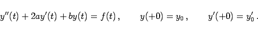
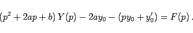
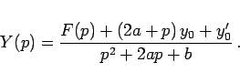
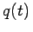

Inhalt Index DeskTop Bronstein

 Integraltransformationen Laplace-Transformation Lösung von Differentialgleichungen mit Hilfe der Laplace-Transformation Gewöhnliche Differentialgleichungen mit konstanten Koeffizienten
Integraltransformationen Laplace-Transformation Lösung von Differentialgleichungen mit Hilfe der Laplace-Transformation Gewöhnliche Differentialgleichungen mit konstanten Koeffizienten


Original- und Bildgleichung lauten
|  | (15.50a) |
|  | (15.50b) |
Für Y(p) ergibt sich dann
|  | (15.50c) |
Fallunterscheidungen:
Die Lösung y(t) erhält man dann durch Faltung der Originalfunktionen des Zählers von Y(p) mit .
Die Anwendung der Faltung wird man zu vermeiden und die rechte Seite möglichst direkt zu transformieren suchen.
| Beispiel |
|
Die Bildgleichung für die Differentialgleichung |